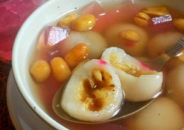

wedang ronde
wedang ronde
Ronde terbuat dari beras ketan yang dibentuk bulat-bulat dengan isian remahan kacang tanah dan gula.
Ronde kemudian disiram dengan kuah jahe yang memiliki rasa pedas manis.
Tekstur ronde cukup padat sehingga bisa menjadi asupan bagi tubuh dan cukup mengenyangkan.